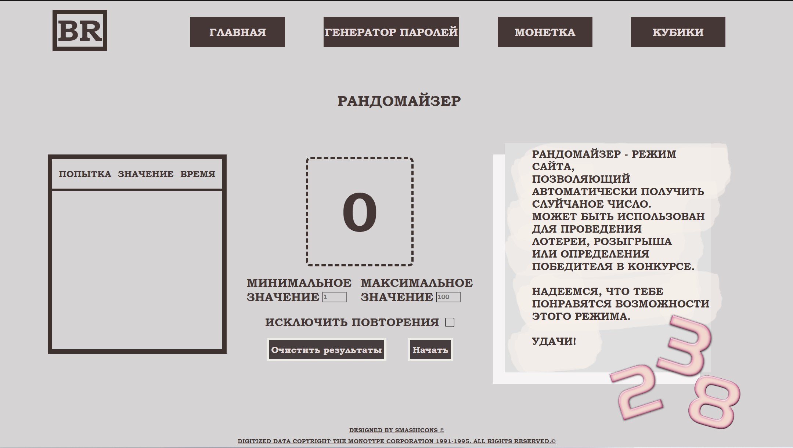

Введение
Здравствуйте! Раз тема задана очень размыто, то использовать ChatGPT бесполезно, поэтому я буду
писать
то,
что приходит в голову и хоть как-то связано с предметом.. Надеюсь, это будет не очень скучно и Вам
понравится(Если на самом деле прочли это, дайте знать 😀)
Часть 1
Я начал увлекаться программированием в мае прошлого года. Первый опыт написания кода - по обучалке
GB
создать сайт на js(курс вроде назывался основы JavaScript или как-то так). Мне это
очень
понравилось и я решил продолжить обучение. В августе 2022 года началось мое обучение. Мне все очень
нравилось и было прикольно.
За время обучения я сделал:
-
На C#:
- Крестики нолики
- Морской бой
- Тетрис
- Все домашние задания
Вот ссылка на игры
Вот ссылка на домашние задания
-
На Python:
- Снова крестики-нолики(на этот раз по заданию преподавателя)
- Демо версию морского боя(делать полноценный морской бой второй раз было
лень)
- Игру поле-чудес(даже с имитацией анимации)
- Почти полноценную(консольную) телефонную книгу
...и вроде что-то ещё, чего я уже не помню
Вот ссылка на гитхаб
Я перечислил два языка, но прошёл по факту три(ещё Java), но на последнем, к сожалению,
попался не очень опытный преподаватель и со мной случилось то, что я
описываю во второй
главе, по этой причине я не указал задания на Java. По этой же причине основное обучение
сейчас
стоит на паузе. Также ещё я поучаствовал в хакатоне на Python по алгоритмам, и
даже
выйграл
его!
Часть 2
И вот наконец мы дошли до причины, упоминавшейся во первой части:
мне
знакомый дал два заказа на сайты. Так как это занимает много времени (позже объясню
почему),
то мне пришлось отложить все свои дела. Но я об этом не жалею, т.к. это полезный опыт, помимо того,
что
за это платят!
Первый сайт - простенький рандомайзер. Т.к. с
алгоритмами я дружу, то сделать его было не очень сложно. Самое сложное было оформить html/css,
поэтому я и записался на
этот курс(немного опоздал, но надеюсь, что полезным он всё же будет). Отсюда вытекает,
что я
все
это пишу, не смотрев лекции и семинары (извините😕).
Если Вам лень открыть сайт(ссылка выше), то вот картинка:

А вот со вторым сайтом всё намного сложнее... По тз он должен:
- Принимать оплату
- Отправлять письмо с заказом
- Сохрнаять все заказы в базу данных
Так как с бэкэндом я не сталкивался от слова совсем, то нанял ментора со стороны для помощи с этим
сайтом.
Было выбрано писать на nodejs, использовать sequalize для работы с БД и платежка была выбрана
payeer. И
вот,
на протяжении уже недели я копаюсь с этим сайтом. Как только я услышал эти требования - сразу начал
искать
информацию на ютубе/в интернете и поставил обучение на паузу. Сейчас нахожусь
на
этапе
проектирования API.
Заключение
На этом мой рассказ подходит к концу, написал его пока ментор вносил правки в струтуру API. Надеюсь,
вы понимаете, что часть этого курса я уже знаю, и сможете принимать уже готовый сайт в качестве дз, если тема урока там
использовалась. Напишите о Вашем решении в комментарии, пожалуйста!
и успехов в Вашем деле!